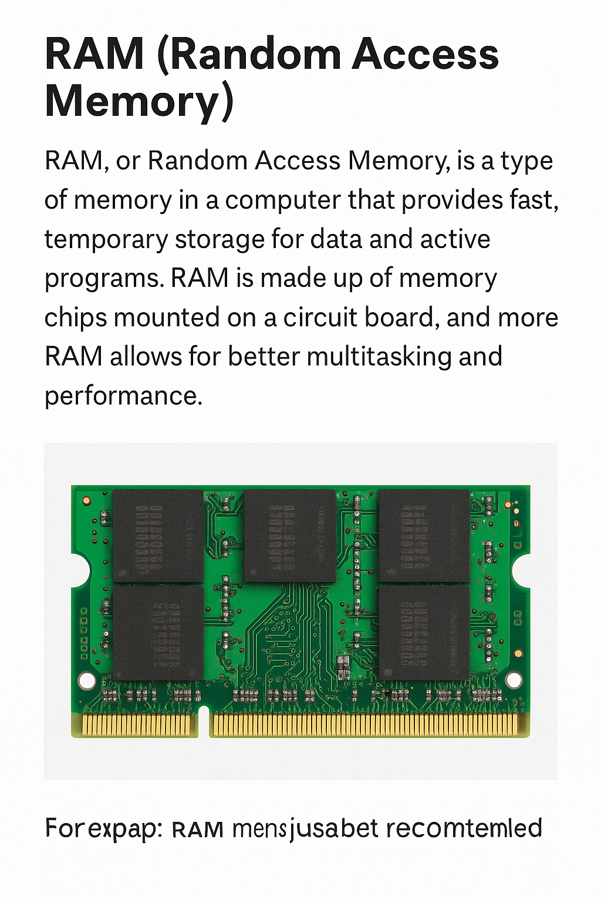

RAM (Random Access Memory) is your phone’s short-term brain. It temporarily holds the data your device is actively using — from open apps to background tasks — making everything run fast and smooth.
More RAM means better multitasking, faster app switching, and a lag-free experience — especially when coding, browsing, or running hacking tools.
When RAM runs low, apps reload, freeze, or crash. But with enough RAM, your phone works like a true multitasking machine.
Benefits of having a good Ram
Faster app loading and smooth switching between coding environments and terminals
Stable performance when using ethical hacking tools like Nmap, Termux, or network scanners
Prevents force-closing of heavy apps such as Chrome, VS Code alternatives, or browser-based editors
Supports simultaneous use of resource-heavy apps like ChatGPT, browsers, and local servers
4GB RAM is usable, but 6GB to 8GB is recommended for proper functioning of development and hacking setups
Minimizes lag in multitasking, which is critical when switching between preview windows and code editors
Reduces overheating by managing background load and improving thermal balance
Better RAM means improved heat dissipation and less throttling during long-term coding or scanning sessions
How the Ram works?
RAM (Random Access Memory) is a critical part of every smartphone. It acts as the device’s short-term memory, handling everything your phone needs to keep active and running in real time. Whenever you open an app, launch a tool, or switch between tasks, RAM temporarily stores that information so the processor can access it quickly, without having to reload from the slower internal storage.
For example, when you're coding or using an ethical hacking tool, RAM makes it possible to keep the code editor and browser active at the same time. Without enough RAM, your device would constantly refresh or close apps in the background, slowing down your workflow and interrupting your focus.
RAM does not store data permanently — it only holds what's needed in the moment. Once the device is turned off or restarted, the memory is cleared. That’s why having more RAM means your phone can handle more tasks at once, reduce lag, and deliver a smoother experience, especially when using performance-heavy apps like coding platforms, virtual environments, browsers, and system scanners.
How the Ram looks like?

A visual representation of a RAM module.
Some curious folks out there might ask why the Ram is cased inside a phone?
Why RAM is Cased Inside a Phone?
Protection from Physical Damage: RAM chips are very fragile and can be scratched or cracked easily.
Prevention of Dust, Moisture, and Heat Damage: Exposure to the environment can cause corrosion or short-circuits.
Efficient Thermal Management: Internal casing helps in controlling heat using paste or graphite sheets.
Signal Integrity and Speed: RAM performs better when it's close to the CPU and protected from interference.
Compact Design: RAM is soldered on the motherboard to save space and improve speed.
What Would Happen If A RAM is cased outside a phone?
⚡ Short Circuits: Static electricity or touch can damage the RAM instantly.
🔥 Overheating: External RAM can't use phone cooling systems and may overheat.
🧠 Slower Speed: Longer signal paths reduce performance and stability.
💥 Permanent Damage: Physical exposure risks scratches, shock, and corrosion.
🔌 Disconnection Risk: Loose connection can lead to crashes or boot failure.
Outer Structure of RAM
Part
Description
IC Package
The black chip shell that protects the silicon die inside.
Gold/Silver Contacts
Connect the RAM to the motherboard for high-speed data transfer.
Heat Spreader (Optional)
Used in advanced phones to cool the RAM module.
Internal Structure of RAM
Component
Function
Memory Cells
Stores binary data (0s and 1s) using tiny electrical charges.
Control Logic
Manages how RAM reads and writes data between CPU and memory cells.
Row & Column Decoders
Helps locate and access exact memory addresses quickly.
Sense Amplifiers
Accurately reads the tiny voltage changes from memory cells.
Timing Circuits
Controls how fast data refresh and access cycles happen.
A typical RAM chip contains billions of tiny capacitors and transistors working together at incredible speed to handle all the active data your phone uses every second.